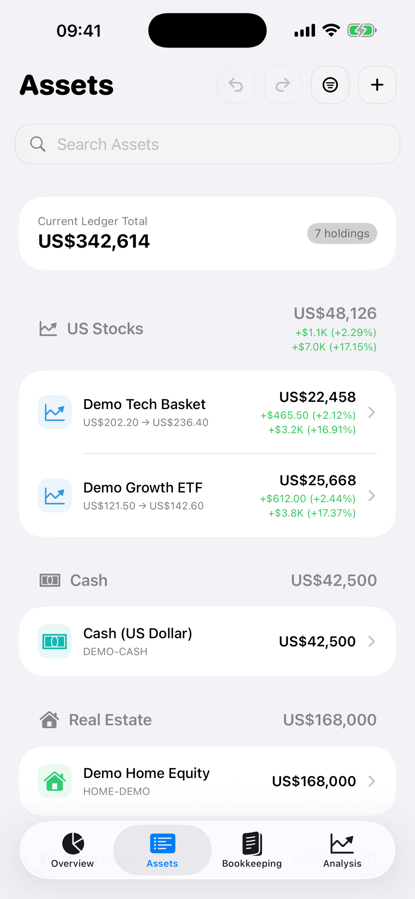

More than one account.
Organize stocks, ETFs, cash, and other assets across accounts. Choose a display currency for your overall view.
YOUR PERSONAL INVESTMENT LEDGER
Record a trade and see your linked cash balance update. Keep holdings, dividends, and cash together across brokerage accounts.
For iPhone · Subscription required
14-day free trial for eligible Apple Accounts.

One ledger for the details that matter.
FOLLOW THE MONEY
Record your trade and link a cash account. Allfolio updates your investment records and the linked cash balance together.
This sample ledger starts with $10,000 in cash. Record a purchase to see where the money goes.
Illustrative workflow, not the app interface. Sample prices; fees omitted. This example stays in your browser.
A QUICK LOOK
See holdings, bookkeeping, and portfolio analysis in this 30-second tour of Allfolio.
Actual app screens. Sample portfolio. No audio.
Watch on YouTube ↗A PLACE FOR YOUR WHOLE PICTURE
Organize stocks, ETFs, cash, and other assets across accounts. Choose a display currency for your overall view.
Record and edit individual transactions. Review holdings, cost basis, and realized and unrealized P&L.
Core records are stored on your device. You can choose to sync them through your own private iCloud database.
Organize your accounts and check the cash side of each trade.
A simple way to organize holdings and transactions in your own ledger.
Read the guide TRANSACTIONS · 4 MIN READWalk through a purchase, a dividend, and a sale without double-counting cash.
Read the guideKeep your USD and SGD cash accounts separate and see their combined value.
Read the guide ↗用一筆美股買入，核對港元及美元戶口的結餘。
閱讀繁體中文指南 ↗下载隐藏金额的中文示例图，或在自己的账本里生成一张。
查看示例 ↗Check buys, sells, dividends, and fees against your recorded cash. Your numbers stay in your browser.
BEFORE YOU GET STARTED
You record your assets and transactions yourself. Optional AI recognition can help turn a screenshot into transaction details for you to review. No brokerage login is required.
Core asset, transaction, and ledger records are stored on your device, with optional sync through your own private iCloud database. Optional AI, market data, feedback, and consented usage analytics have separate data flows explained in our privacy policy.
Allfolio is free to download. An active monthly or yearly subscription, or an eligible trial, is required to use the app. Eligible Apple Accounts can start a 14-day free trial. Current plans and prices are shown in the App Store and in the app. Trials renew as paid subscriptions unless canceled in your Apple Account settings.
Allfolio is available on the App Store for iPhone running iOS 17 or later.
Yes. Record assets and cash accounts in their own currencies, then choose a display currency for the combined view.
YOUR NEXT CHAPTER, CLEARLY RECORDED
Subscription required. Free trial for eligible accounts.